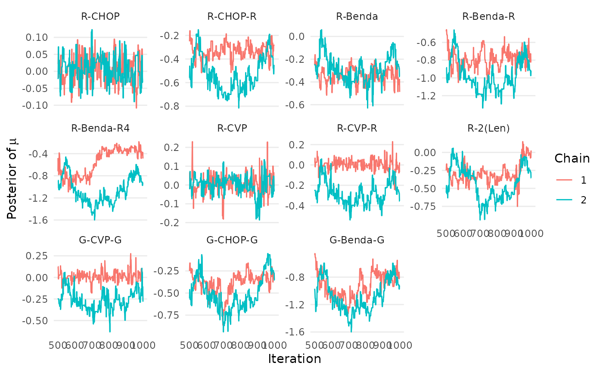
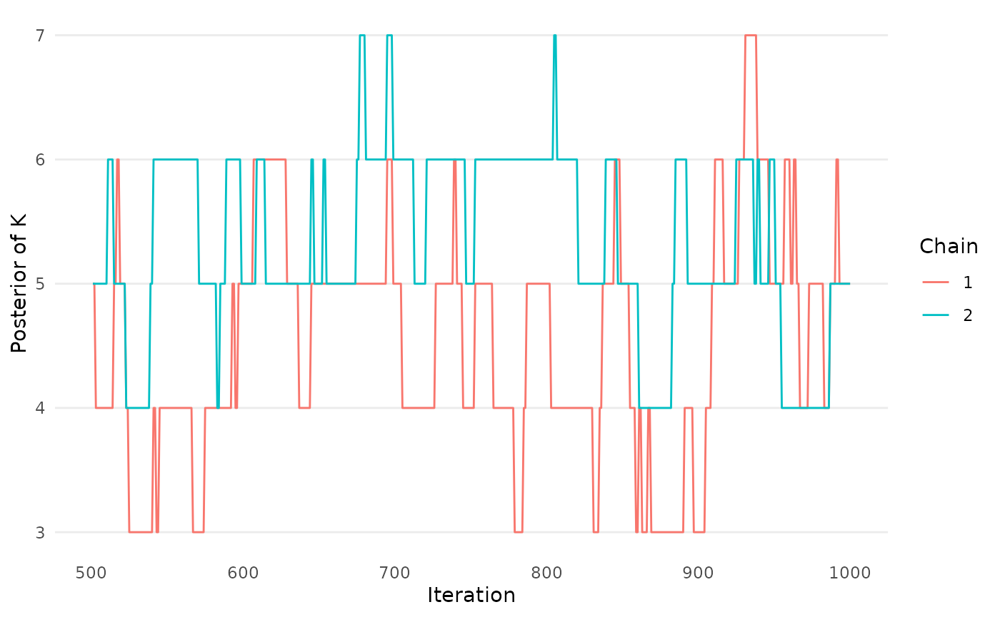
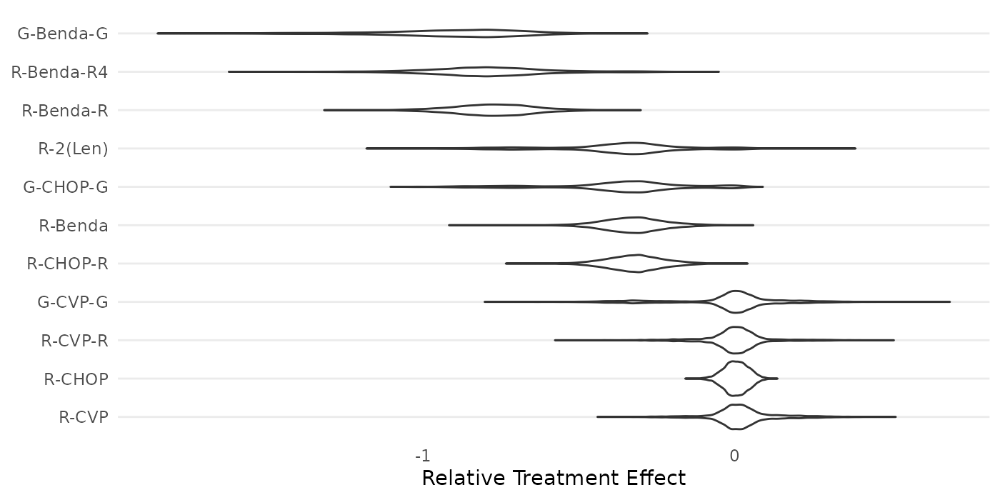
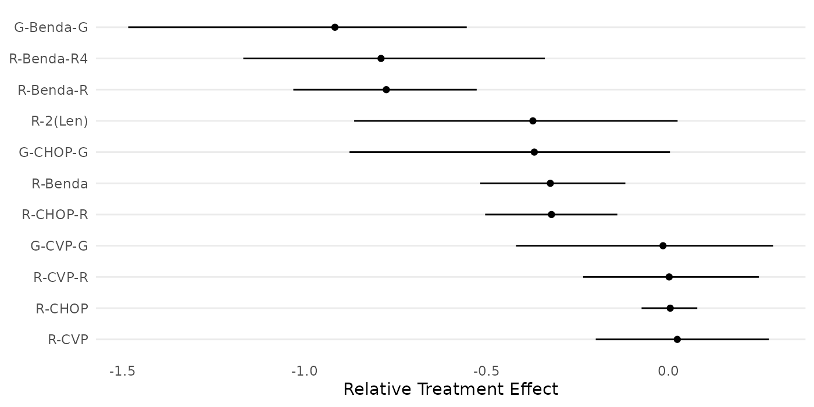

Overview
In this vignette, we provide a detailed tutorial of the key
functionalities of the RaCE.NMA R package. The package has
functions to complete three primary tasks when utilizing the proposed
RaCE methodology for network meta-analysis:
- Model estimation
- Model assessment
- Inference and summary statistics
We demonstrate each of these tasks below, after loading the necessary packages.
Data
Throughout this tutorial, we use a dataset displaying the results of a previous NMA study provided by Wang et. al (2022). The data is loaded below:
data("WangPosteriors")
wang_posterior <- mcmc.df[,4:13] # posteriors of non-baseline treatments
wang_ybar <- c(0, apply(wang_posterior,2,mean)) # calculating mean relative treatment effects
wang_cov <- cov(wang_posterior) # calculating covariance of relative treatment effects
wang_cov <- cbind(c(min(apply(wang_posterior,2,var))/10, rep(0,10)), # updating covariance for baseline treatments
rbind(0,wang_cov) )
wang_s <- sqrt(diag(wang_cov))
treatments <- c("R-CHOP","R-CHOP-R","R-Benda","R-Benda-R","R-Benda-R4",
"R-CVP","R-CVP-R","R-2(Len)","G-CVP-G","G-CHOP-G","G-Benda-G")The following forest plot displays the relative treatment effects of the 11 treatments in the study, as estimated by Wang et. al (2022).
forestplot_data <- data.frame(
name=treatments,
mean=wang_ybar,
lower_CI=c(-1.96*sqrt(min(apply(wang_posterior,2,var))/10),apply(wang_posterior,2,function(x){quantile(x,0.025)})),
upper_CI=c(1.96*sqrt(min(apply(wang_posterior,2,var))/10),apply(wang_posterior,2,function(x){quantile(x,0.975)}))
)[-1,] # excluding baseline treatment
forestplot_data$name <- factor(forestplot_data$name,levels=forestplot_data$name[order(forestplot_data$mean)])
ggplot(forestplot_data, aes(y=name, x=mean, xmin=lower_CI, xmax=upper_CI) ) +
geom_point() + geom_linerange() +
scale_y_discrete(limits=rev) + labs(y="Treatment",x="Posterior") +
theme_bw() + theme(panel.grid.minor = element_blank(),panel.grid.major.x = element_blank())
1. Model Estimation
The RaCE.NMA packages contains a primary model-fitting
function, mcmc_RCMVN. The function requires many inputs,
which may be broken down into three categories:
- Previous results from an NMA analysis: The user must provide results on the relative treatment effects from a previous NMA study. Various formats are allowed; see below.
- Model hyperparameters: Parameters which correspond to “priors” in the Bayesian model. Vague priors are available by default.
- MCMC settings: Specifications of an MCMC estimation procedure, including the number of independent chains, length of each chain, thinning and burn-in, etc. By default, the function runs 2 chains, each of length 15000 and removes the first half of iterations as burn-in.
Previous results from an NMA analysis
If available, we recommend inputting the full posterior of the
relative treatment effect from a previous NMA analysis into the
mcmc_RCMVN function. In this case, the
posterior argument should be provided an
matrix, where the (i,j) entry indicates the relative treatment effect of
treatment
in MCMC draw
.
An example of this functionality is provided below:
mcmc_RCMVN(posterior = wang_posterior)In the above code, default settings are used for all other inputs. (We recommend against this practice.)
Alternatively, one may provide summary statistics of the model posterior (instead of a full posterior itself). This is useful when applying the RaCE-NMA methodology to the results of a published paper post-hoc, when only summary statistics are available. In this setting, the user must provide two inputs:
-
ybar: A vector of length (the number of treatments), where the th entry displays the average relative treatment effect of treatment -
covors: A matrix or vector of length , which contain either a covariance matrix of the relative treatment effects or the treatment-specific standard deviations of relative treatment effects.
If posterior is provided, any inputs for
ybar, cov, and s will be ignored.
If cov is provided, s is ignored. An example
of this functionality is provided below:
mcmc_RCMVN(ybar = wang_ybar, cov = wang_cov) # cov example
mcmc_RCMVN(ybar = wang_ybar, s = wang_s) # s exampleModel hyperparameters
Next, we may specify the following hyperparameters:
-
mu0: The prior mean on the rank-clustered relative treatment effects. Defaults tomean(ybar), which aims to be vague. -
sigma0: The prior standard deviation on the rank-clustered relative treatment effects. Defaults tosqrt(10*var(ybar)), which aims to be vague.
The following code demonstrates how one could specify these hyperparameters directly in the estimation function:
mcmc_RCMVN(posterior = wang_posterior,
mu0 = mean(wang_ybar), sigma0 = sqrt(10*var(wang_ybar)) )MCMC settings
Last, we may specify parameters that control how the MCMC chains are run:
-
tau: The standard deviation of the Metropolis Hastings proposal distribution. Defaults tomin(|ybar_i-ybar_j|). -
nu0: How cluster-specific mean parameters are initialized. Defaults toNULL, which randomly samples from the prior distribution. -
num_iters: The number of times the rank-clustering structure is sampled in each MCMC chain. Defaults to . -
nu_reps: The number of times each cluster-specific mean is sampled per sampling of the rank-clustering structure. Defalts to . In total, there will benum_itersnu_repssamples from the posterior. -
chains: The number of independent MCMC chains. Defaults to 2. -
burn_prop: The proportion of MCMC samples in each chain to be removed as burn-in. Defaults to 0.5. -
thin: A number indicating how often to thin samples. Defaults to 1, indicating no thinning. -
seed: The random seed to run chains. Defaults toNULL, meaning the environment seed is inherited.
The following code demonstrates how one could specify some of these settings directly in the estimation function:
mcmc_results <- mcmc_RCMVN(
ybar = wang_ybar, cov = wang_cov,
mu0 = mean(wang_ybar), sigma0 = sqrt(10*var(wang_ybar)),
num_iters = 10000, nu_reps = 2, chains = 2, seed = 1
)
#> [1] "Estimating chain 1 of 2."
#> [1] "Estimating chain 2 of 2."2. Model Assessment
The package contains three functions to assess if the MCMC chains
have converged and mixed. The first two produce trace plots of
mu and K, the primary model parameters. The
third calculates the
statistic for each mu parameter. A standard rule of thumb
is to ensure that
.
createtrace_mu(mcmc_results, names=treatments)
createtrace_K(mcmc_results)
calculate_Rhat(mcmc_results, names=treatments)
#> Potential scale reduction factors:
#>
#> Point est. Upper C.I.
#> R-CHOP 1.00 1.01
#> R-CHOP-R 1.01 1.06
#> R-Benda 1.02 1.09
#> R-Benda-R 1.00 1.02
#> R-Benda-R4 1.00 1.00
#> R-CVP 1.08 1.30
#> R-CVP-R 1.09 1.32
#> R-2(Len) 1.16 1.55
#> G-CVP-G 1.08 1.31
#> G-CHOP-G 1.19 1.65
#> G-Benda-G 1.16 1.553. Inference and summary statistics
Often, we are most interested in creating a clustering probability matrix and a cumulative ranking curve. We create these plots in the code chunks below.
create_clustermatrix(mcmc_results, names = treatments, label_ranks = 1)
create_cumulativeranking(mcmc_results, names=treatments)
The package also includes functions to produce violin plots of model posteriors.
create_violinplot(mcmc_results,names=treatments)
create_forestplot(mcmc_results,names=treatments)